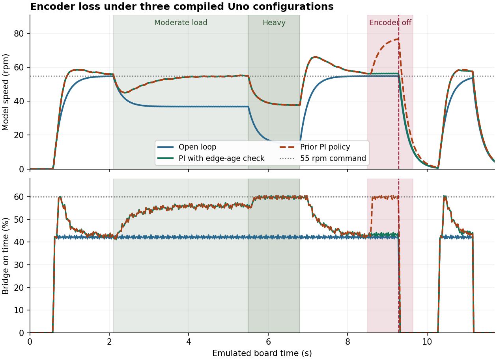

Test compiled wheel firmware against a motor model
A control equation can work in a spreadsheet while the code mishandles a held button or lost encoder. Run the same compiled firmware that you would load onto the Uno and compare its actual pin and serial behavior with the modeled shaft.
Build two sketches for the same board
Use a new writable exercise directory with Node.js, npm and Arduino CLI. Download wheel-speed-trainer.ino into a folder named wheel-speed-trainer. Keep closedLoop false for the first build. Install the pinned Uno core if necessary, then compile the sketch. There is no board to connect or upload in this lab.
arduino-cli core update-index
arduino-cli core install arduino:avr@1.8.8
arduino-cli compile --fqbn arduino:avr:uno --output-dir open-build wheel-speed-trainerSet closedLoop to true in your copy and build the PI version separately.
arduino-cli compile --fqbn arduino:avr:uno --output-dir pi-build wheel-speed-trainerDownload firmware-bench.mjs into the exercise directory alongside both build folders. Use the application HEX files without the bootloader suffix. The harness runs the AVR instructions, timers, UART and GPIO with AVR8js.
npm init -y
npm install --ignore-scripts --save-exact avr8js@0.21.1
node firmware-bench.mjs open-build/wheel-speed-trainer.ino.hex pi-build/wheel-speed-trainer.ino.hex evidenceUse a new evidence folder name for each run. The process asserts the expected pin transitions and modeled speed ranges. Each run emits the serial log, bridge-enable edges and plant samples. Keep the source revision and build configurations with these files.
Trace the loop across its real pins
The harness reads D4 standby, D5 PWM and both direction inputs from the emulated bridge pins. It calculates the fraction of active drive cycles and updates a first-order motor with a 220 ms time constant. The model’s steady speed is max(0, 130 × duty − equivalent load) in rpm. The modeled shaft drives D2 pulses at about 301 rising edges per turn, so the firmware has to count pins and convert the measured interval itself. D11 selects 55 rpm and D12 supplies a simulated hold-to-run switch.

| Test | What the harness applied | Observed result |
|---|---|---|
| Boot and debouncing | Hold run at boot, release, then press for 20 ms. Give a sustained press starting at 550 ms. | The first enable edge occurs near 590.0 ms in both runs. |
| Moderate load | Subtract an 18 rpm equivalent load from 2.1 to 5.5 s. | Mean over the last half-second is 36.8 rpm open loop and 55.0 rpm with PI. |
| Heavy load | Increase the modeled load to a 40 rpm equivalent from 5.5 to 6.8 s. | The PI command reaches the 60% limit. Load exceeds what that duty can hold at 55 rpm. |
| Feedback gone | Stop supplying encoder edges at 8.500 s while the run input stays pressed. | The prior PI policy raises duty and the model reaches 76.8 rpm. With the edge-age check, PI holds duty and the model peaks at 56.4 rpm. Drive disables near 9.293 s in both PI runs. |
| Feedback returns and operator releases | Restore edges at 9.650 s. Release run at 10 s, then give a sustained new press at 10.250 s. Release again at 11.150 s. | No automatic restart on restored feedback. A new enable occurs near 10.289 s. The final release disables promptly without waiting for the next speed measurement. |
The 700 ms grace is timed from the last 100 ms measurement window that contained edges. The PI runs disable about 793 ms after the pin stops producing edges. The first window affected by the interruption can still contain a few pulses. The edge-age check ignores that incomplete measurement when the last edge is older than 30 ms, and ignores empty windows altogether. Holding duty limits the acceleration in this specific test. A real drive needs a response and timeout established for its operating envelope, including slower speeds and partial pulse loss.
Download the observed logs. Open-loop model · PI model · Open-loop UART · PI UART · Open-loop pin · PI pin.
Reproduce the previous policy in the emulator
With closedLoop still true, build a third image with the old PI update policy for comparison in the emulator. Find the zero-rpm and 0.600-duty rows in the prior UART log and compare them with the prior motor-model speed and bridge-enable transitions. Use the default build for the bench lesson.
arduino-cli compile --fqbn arduino:avr:uno --output-dir pi-prior-build \
--build-property compiler.cpp.extra_flags=-DWHEEL_ALLOW_OLD_PI_UPDATE=1 wheel-speed-trainer
node firmware-bench.mjs open-build/wheel-speed-trainer.ino.hex pi-build/wheel-speed-trainer.ino.hex evidence-compare pi-prior-build/wheel-speed-trainer.ino.hexSeparate the firmware test from the hardware tests
- Check model speed and firmware speed separately as the load changes. At 60% and a 40 rpm equivalent load, steady speed in the model is 38 rpm. Explain why PI cannot deliver the requested 55 rpm at that limit.
- Move the simulated disconnection earlier or later within a sample window. Check the largest plausible update from a partial window and what changes if you shorten the maximum edge age. Define startup separately from steady motion and include low valid speeds in the tests.
- List the bench measurements still required. Include encoder quality at the receiver, supply current, stop behavior and independent physical speed. The emulator checks the application behavior under the stated model and inputs.